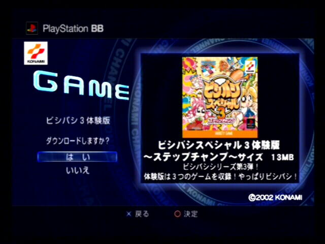
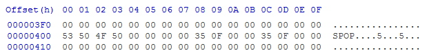

History
📎 Recovered from the ShaolinAssassin wiki · snapshot 20201112015831
POPS’ History
ビシバシスペシャル3 / Bishi Bashi Stepchamp 3 (actually a severely cut version of it with only 3 minigames) is the only known PS1 game using an emulator and installed onto the PS2 HDD. Developed by SCEI and published by KOEI, it was offered to Japanese BB Unit owners, as a DLC, thru the Konami PSBB Channel years ago. It uses an PS1 emulator, originally locked out to work only with its bundled PS1 game and protected with DNAS (content binded to the hard drive and PS2 console at same time, making it work only on that specific PS2 unit it was installed to originally). It most likely emulates the original Playstation through software emulation. The official Title ID of the package was “SLBB-00001”, and the original partition name was “PP.SLBB-00001” (128MB sized).
The emulator has no official name – it was named “POPS” because that string was found in the disc0 file header (which is the TOC of the RAW source dump). It has few similarities with the PSP Popsloader (undocumented).
Images & screenshots

